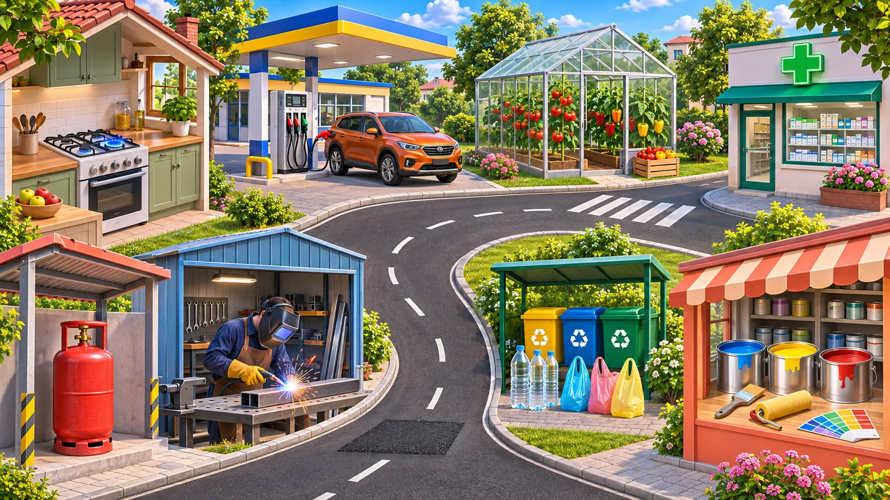

Натискай на пронумеровані точки на мапі. Для кожного об'єкта визнач, який вуглеводень тут працює і на якій його властивості ґрунтується застосування. Потім зроби еко-вибір. Разом 12 балів.

За кожен об'єкт: 0,5 б. за вуглеводень і 0,5 б. за властивість. Кожен об'єкт перевіряється один раз.
🔒 Відкриється, коли пройдеш усі 9 об'єктів міста.
Пройди всі об'єкти й еко-вибір, тоді кнопка стане активною.